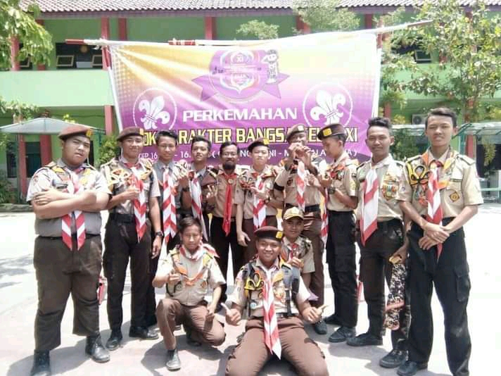
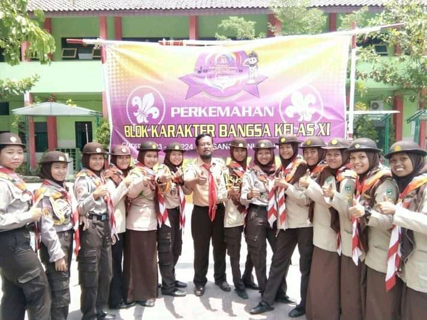

PORTAL SMA NEGERI 3 BREBES |
||||
| HOME | PROFIL | STRUKTUR | PENDAFTARAN | KONTAK |
Selamat datang di SMA Negeri 3 Brebes VISI
MISI
|

Pramuka SMA NEGERI 3 BREBES Dewan Ambalan Gesang Geni Gudep 16.223 |
||||
| 
Pramuka SMA NEGERI 3 BREBES Dewan Ambalan Mandala Griya Gudep 16.224 |
Designed by: Roman Fauzan | ||||